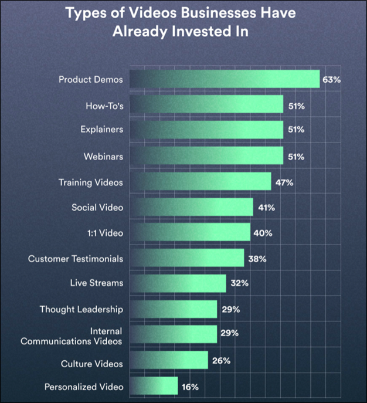
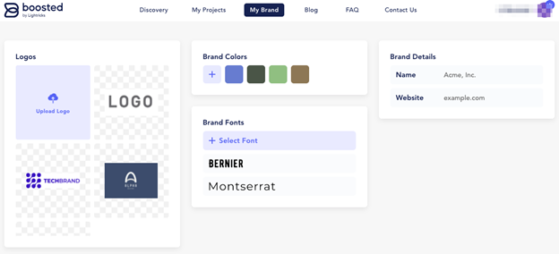
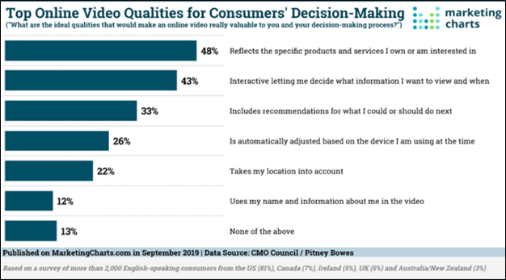

Video consumption is at an all-time high. More than 82% of the internet traffic is occupied with video, from educational content to entertainment reels. In fact, four out of the top six platforms where global consumers watch videos are social channels.
Since it can be created in different styles that fit various purposes, video is now considered an essential piece of the business growth plan. It is central to outreach efforts, with 32% of businesses and 94% of marketers using video for sales and promotional activities.
However, companies end up creating videos that do not necessarily engage with their audience or make potential customers want to know more about what they offer. Video creation is a mix of art and science. The skill levels, tools, budgets, and time employed vary.
One cannot just pick up a smartphone and expect to record a stellar video on it at random. What is required is for you to leverage your creative muscle and give video-making dedicated time and energy it deserves so that you do not make the following six video marketing blunders:
1. Not conveying a message through your video
Let us take an example. You just watched a video on Facebook of a company that showcased its offerings, pricing, awards won, background story, and the CEO’s interview in under three minutes. What did you learn? Probably nothing, even if you watched it all the way through.
The video may have fantastic visuals, but because it did not reflect the message the company was trying to tell, you forgot about it and went back to scrolling down your Facebook feed. That is okay. It happens to the best of us.

The bottom line is if you want to deliver impactful marketing information, pay attention to how you craft the messaging in your video. Your target audience might not be as fascinated by your video as your own family, friends, and coworkers would be.
Convey a message. Every successful marketing video has a valuable message to share that the audience understands without breaking a sweat.
2. Not making an effort to get your branding right
Since video-making is a creative process, you must never lose track of your ultimate goal, i.e., communicating the benefits of your business.
Sticking to your brand values is imperative. From background music to scripting — many video-making elements can impact how your audience feels after watching the video.
For example, if you are marketing a gardening app, you would not want to mistakenly use a loud and jarring background score in your video because that does not align with the vibe and essence of what you sell.
Therefore, to avoid confusing your audience, make sure your branding is on point. Use Boosted to customize a suitable template you love as per your business requirements. Add relevant color palettes, music, video clips, fonts, and a corporate logo to the video.

Whether you have an in-house designer or have one, the tool can help you keep your branding in line and not forget about the ultimate goal, i.e., product or service promotion. You can easily apply your brand styles to any of the platform’s pre-built templates, too, by using the “My Brand” feature.
3. Selling aggressively and not telling a story
Ever wondered why door-to-door selling became history? It is intrusive and impersonal. If you are like most people, you have not opened the door or simply said no to salespeople and not regretted it. Persistence in marketing and sales is essential but not pushiness.
Similarly, if all you talk about in your video is your company and offerings, it would not resonate with your target audience. Instead, weave a story around how your products or services can solve consumer pain points.
Maybe use a case study or testimonial to tell an authentic story. By including the right questions, you can highlight the specific ways your offering has helped your customers.
For example, product demos can help engage leads at the bottom of the funnel, while video webinars help convert those in the middle. Your videos should aim to educate and entertain potential customers. Focus on a problem and tell how you can help them solve it.
4. Not including a proper Call-To-Action (CTA)
You would be surprised to know that many companies forget to include CTAs in their videos. If you do not tell your viewers the next steps, they will move on even if the video was convincing.
Why make them work hard when you can define a CTA and direct them wherever you want them to go? It is that simple.
Therefore, keep a CTA at the end of your video, engaging the audience until the end. Popular options include “Download Free Ebook,” “Visit Our Website,” “Shop Now,” and so on. Volkswagen uses multiple CTAs at once, giving its viewers the option to choose their next step.
Share the link to the CTA in the caption, depending on where you post the video. Be direct and honest with your viewers about what they will see on clicking the CTA.
5. Not making the video short and crisp
In this day and age, people have access to swarms of video content across different platforms. If they do not like something, they have the option to scroll over, switch channels, or simply bounce off it. Today’s internet users are spoiled for choice.
Moreover, the average attention span of humans is eight seconds, which means your video content must be able to catch your audience’s attention from the very start and also keep them engaged throughout.
That is the reason why it is wise to cut down on your video length. According to the Vidyard report, 73% of videos are two minutes long or less than that. Not to mention, lengthy videos do not go well with most social media platforms, even with the rise of Facebook Watch and IGTV.

6. Failing to address your target audience
Sure, you want to expand your video reach as much as possible. You might even like it to go viral. But your content will be more effective if you focus on one pain point, directed at one type of target customer, and do not cast too wide a net.
Having said that, you must decide who to address. This is especially helpful when you are running a campaign intending to promote a single agenda. Imagine you want to sell outsourced accounting services to businesses in London.
Your video content should be exclusively created for the target audience, i.e., London businesses. When you know who you are marketing to, finalizing video content and CTA becomes easy. You find a direction for your research.
Ready, set, let us go!
Video-making does seem daunting at first, but with practice comes experience. If you consistently make videos, you will get better at producing high-quality content unique to your brand. With 71% of consumers watching more videos online than they did a year ago, you must hop on the video bandwagon.
If you currently do not have the resources to produce a high-quality video, start with merely turning blog posts into videos or doing a short Q&A with your founder or customer. Using the content format to promote information freshly and excitingly is to indeed interest and delight your audience. All the best!
About the Author
Jenna Kramer is a freelance marketing writer. She has 6+ years of experience in writing about business, technology, entrepreneurship and social media marketing. Jenna loves to split her time between blogging and hanging out with her friends and family.
Leave a Reply